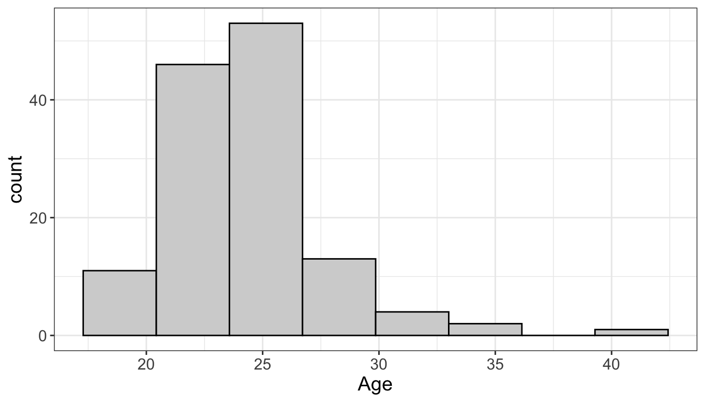
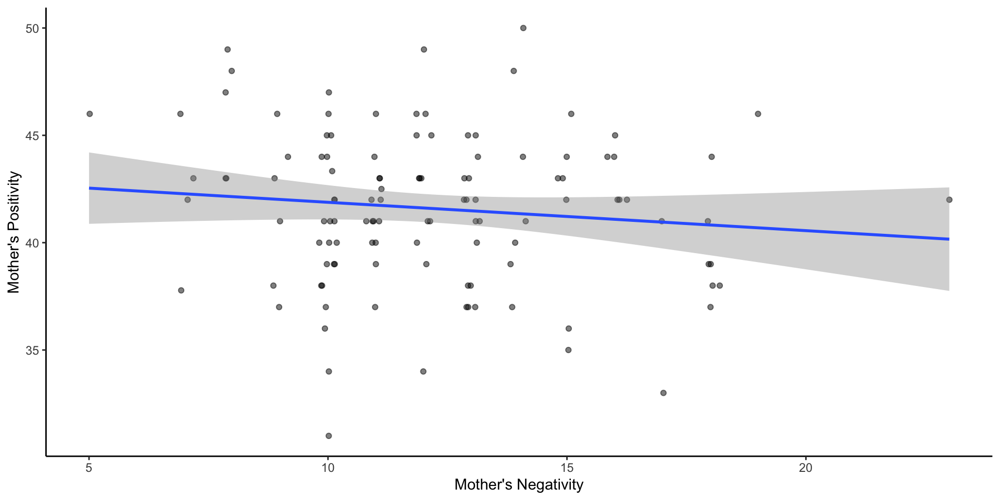

Introduction to R For Psychology
Deborah Apthorp
Why use R?
- It’s free!
- All your analyses can be scripted - improved replicability
- Beautiful and very flexible plotting
- Lots of great packages available online for specialised analyses
- A very marketable skill to have
Why not use R?
- Just because it’s free (JASP and jamovi are very nice free point & click packages - jamovi is built on R)
- Your supervisor probably won’t know it (unless it’s me) so won’t be able to help you
- It’s open source, so packages can be buggy
- It’s quite easy to do something wrong without knowing it
- Can be frustrating trying to get things to work!
Resources
- FREE book/course by Danielle Navarro (UNSW) - Learn Statistics With R
- YARR! The Pirate’s Guide to R (FREE)
- DataCamp: Introduction to R (FREE)
- For specific questions: try StackExchange and StackOverflow (also FREE but sometimes confusing or misleading unless you know what you’re doing)
- Recently discovered: Rminr by Andy Willis! Some terrific exercises for all levels
Resources (cont’d)
- RLadies Global are awesome (they have a Slack too)
- They have a course called R You With me - fantastic for beginners! (Alycia recommends)
- PsyTeachR from Glasgow Uni Psych has a whole set of courses free online, with resources (very inspiring to me)
- When all else fails, Google your error message!
- Try the tutorials built into RStudio
Basics: Installing R
- Download from https://cran.csiro.au/
- HIGHLY RECOMMENDED: Also download R Studio (free version is fine)
- Install R first, then R Studio
- Should be OK for Windows, Mac, Linux. No fancy command line needed for installing
Importing data
R will generate code you can use!
R will generate code you can use!

Installing packages
- Can do it via point & click in RStudio
- However, better to use install.packages
- Once they are installed, you also have to load them!
library()- or can do via tick-box- Better to include in script
Some basic useful functions
- Calculate means using
mean() - Calculate medians using
median() - Standard deviation:
sd() - Range:
range() - Interquartile range:
IQR() - Specific quantiles:
quantile()
What about missing data?
- Sometimes there are missing data
- These are represented as NA values
- Different functions handle NA values differently
- What is the mean of 3, 4, 5 and NA?
- Pragmatic answer: ignore the missing data, and calculate the average of 3,4 and 5… i.e., mean = 4
- Cautious answer: we don’t know the missing value, so we don’t know the mean either… i.e. mean = NA
What about missing data?
- By default, mean() gives the conservative “don’t know” answer
[1] NA- But we can force it to be a pragmatist: tell R to remove the NA values by specifying
na.rm=TRUE
- (the na.rm argument shows up in quite a lot of functions)
Calculating a trimmed mean
- Sometimes the mean isn’t a compelling measure of central tendency, but we’d prefer not to resort to the median because the sample size is so small
- Using the
trim=.1argument gives the 10% trimmed mean, a more robust measure of central tendency than the mean
Exercise - load some data, do some basic statistics
Step 1 - create a new project
- File > New Project
Click “New Project”
Type in a name that makes sense
Now let’s make an R script!
- File > New file > R script
Installing and loading packages
- The command for installing packages is
install.packages() - Let’s try
install.packages("psych") - This is a very useful package for psychology data!
- Never include this line in your script though!
- To call a package for use, you can type
library(psych)orrequire(psych)into your script.
Loading data
- Let’s load some data!
- If you look in the “files” tab, and you’ve downloaded the data to the right place, you should be able to click on the file and R will prompt you to import it.
- Or you can type this:
Data1=read.csv("Zhang et al. 2014 Study 3.csv", header=T)- That should work if the file is in your project folder.
- Now you can view it:
view(Data1)
Exploring data
- Now let’s generate descriptive statistics using the
psychpackage describe()reports basic summary statistics (mean, sd, median, max, range, minimum, maximum, skew, kurtosis, standard error)- Type this into your script
describe(Data1)- You can see why its a useful command!
Visualising data (base R)
- Now lets do some data visualisation using base R (i.e. we’re not using a package here)
- First let’s look at histograms of some variables
hist(Data1$Age)hist(Data1$Gender)
Visualising data (base R)
- What about boxplots?
Visualising data (base R)
- Let’s try memory!

Visualising data: Flexplot and ggplot2
- You can see how sometimes the formatting is nice, sometimes not.
- So people have made packages to get nice formatting
- One of my favourites for beginner data visualisation is
flexplot flexplotcreates ‘objects’ which are then editable usingggplot2
Installing flexplot is kind of a pain though
install.packages("devtools")devtools::install_github("dustinfife/flexplot")install.packages("ggplot2")library(flexplot)library(ggplot2)
Visualising data: Flexplot and ggplot2

Visualising data: Flexplot and ggplot2
- In flexplot, you can alter the look of the plots so that they are APA style!
Visualising data: Flexplot and ggplot2
Visualising data: Flexplot and ggplot2
- Try this:
Visualising data: Flexplot and ggplot2

Visualising data: Flexplot and ggplot2
- What about a scatterplot?
- For this we need to write a little bit of code describing a regression model
- Let’s use a different dataset that contains more continuous variables!
Visualising data: Flexplot and ggplot2
vars n mean sd median trimmed mad min max range
familyid 1 118 533.41 650.21 259.50 401.25 43.74 201.00 2020.00 1819.00
child_age 2 118 62.94 7.20 62.00 62.55 7.41 46.00 82.00 36.00
child_gender 3 118 0.50 0.50 0.50 0.50 0.74 0.00 1.00 1.00
child_warmth 4 100 5.43 0.76 5.65 5.57 0.52 2.67 6.20 3.53
child_anger 5 98 3.36 1.10 3.25 3.25 1.11 1.83 6.17 4.33
mum_pos 6 115 41.60 3.54 42.00 41.66 2.97 31.00 50.00 19.00
mum_neg 7 115 12.15 3.06 12.00 11.97 2.97 5.00 23.00 18.00
chaos 8 107 2.43 0.52 2.50 2.41 0.49 1.25 3.58 2.33
sdq 9 107 1.28 0.15 1.26 1.28 0.18 0.98 1.64 0.66
skew kurtosis se
familyid 1.81 1.32 59.86
child_age 0.44 -0.03 0.66
child_gender 0.00 -2.02 0.05
child_warmth -1.48 1.77 0.08
child_anger 0.64 -0.40 0.11
mum_pos -0.24 0.04 0.33
mum_neg 0.63 0.50 0.29
chaos 0.28 -0.36 0.05
sdq 0.38 -0.60 0.01Visualising data: Flexplot and ggplot2
Visualising data: Flexplot and ggplot2
Visualising data: Flexplot and ggplot2
- Let’s add some nicer labels
- We are using
ggplot2syntax to add these now
Visualising data: Flexplot and ggplot2

Simple analyses - correlations
- This is how to do correlations using the
psychpackage!
Simple analyses - correlations
Call:corr.test(x = Data2)
Correlation matrix
familyid child_age child_gender child_warmth child_anger mum_pos
familyid 1.00 -0.28 0.21 0.03 -0.10 0.03
child_age -0.28 1.00 -0.02 0.14 -0.18 -0.09
child_gender 0.21 -0.02 1.00 -0.12 0.05 -0.05
child_warmth 0.03 0.14 -0.12 1.00 -0.19 0.16
child_anger -0.10 -0.18 0.05 -0.19 1.00 0.07
mum_pos 0.03 -0.09 -0.05 0.16 0.07 1.00
mum_neg -0.02 -0.06 -0.04 -0.27 0.02 -0.11
chaos 0.04 -0.08 -0.05 -0.19 0.13 0.01
sdq -0.01 -0.06 0.03 -0.04 0.03 0.14
mum_neg chaos sdq
familyid -0.02 0.04 -0.01
child_age -0.06 -0.08 -0.06
child_gender -0.04 -0.05 0.03
child_warmth -0.27 -0.19 -0.04
child_anger 0.02 0.13 0.03
mum_pos -0.11 0.01 0.14
mum_neg 1.00 0.13 0.14
chaos 0.13 1.00 0.16
sdq 0.14 0.16 1.00
Sample Size
familyid child_age child_gender child_warmth child_anger mum_pos
familyid 118 118 118 100 98 115
child_age 118 118 118 100 98 115
child_gender 118 118 118 100 98 115
child_warmth 100 100 100 100 98 99
child_anger 98 98 98 98 98 97
mum_pos 115 115 115 99 97 115
mum_neg 115 115 115 99 97 115
chaos 107 107 107 98 97 105
sdq 107 107 107 98 97 105
mum_neg chaos sdq
familyid 115 107 107
child_age 115 107 107
child_gender 115 107 107
child_warmth 99 98 98
child_anger 97 97 97
mum_pos 115 105 105
mum_neg 115 105 105
chaos 105 107 107
sdq 105 107 107
Probability values (Entries above the diagonal are adjusted for multiple tests.)
familyid child_age child_gender child_warmth child_anger mum_pos
familyid 0.00 0.07 0.85 1.00 1.00 1.00
child_age 0.00 0.00 1.00 1.00 1.00 1.00
child_gender 0.02 0.79 0.00 1.00 1.00 1.00
child_warmth 0.74 0.18 0.23 0.00 1.00 1.00
child_anger 0.31 0.07 0.59 0.07 0.00 1.00
mum_pos 0.75 0.34 0.56 0.12 0.50 0.00
mum_neg 0.83 0.53 0.68 0.01 0.88 0.22
chaos 0.65 0.40 0.59 0.06 0.20 0.92
sdq 0.92 0.52 0.78 0.67 0.75 0.17
mum_neg chaos sdq
familyid 1.00 1.00 1
child_age 1.00 1.00 1
child_gender 1.00 1.00 1
child_warmth 0.23 1.00 1
child_anger 1.00 1.00 1
mum_pos 1.00 1.00 1
mum_neg 0.00 1.00 1
chaos 0.19 0.00 1
sdq 0.14 0.11 0
To see confidence intervals of the correlations, print with the short=FALSE optionSimple analyses - correlations
- Here is another way to generate a correlation matrix, this time just the lower diagonal
fmlyd child_g chld_gn chld_w chld_n mm_ps mm_ng chaos sdq
familyid 1.00
child_age -0.28 1.00
child_gender 0.21 -0.02 1.00
child_warmth 0.03 0.14 -0.12 1.00
child_anger -0.10 -0.18 0.05 -0.19 1.00
mum_pos 0.03 -0.09 -0.05 0.16 0.07 1.00
mum_neg -0.02 -0.06 -0.04 -0.27 0.02 -0.11 1.00
chaos 0.04 -0.08 -0.05 -0.19 0.13 0.01 0.13 1.00
sdq -0.01 -0.06 0.03 -0.04 0.03 0.14 0.14 0.16 1.00Using apaTables to save your tables!
install.packages("apaTables")library(apaTables)apa.cor.table(Data2, filename="Table1_APA.doc")- Neat!!
Subset your data!
- What if I’m only using a subset of a larger number of items and I wantto make a correlation matrix of this subset?
- I need the
tidyversepackage to make the pipe %>% work! install.packages("tidyverse")
Subset your data!
chld_ mm_ps mm_ng chaos
child_age 1.00
mum_pos -0.09 1.00
mum_neg -0.06 -0.11 1.00
chaos -0.08 0.01 0.13 1.00Save the table
apa.cor.table(Data_Sub, filename="Table2_APA.doc")
Regression analysis - simple
- So we see a slight negative correlation between mum_pos and mum_neg
- But how do we do the regression analysis in R?
- Does mother’s level of negativity significantly predict their level of positivity?
Regression analysis - simple
Call:
lm(formula = mum_pos ~ mum_neg, data = Data2)
Residuals:
Min 1Q Median 3Q Max
-10.8805 -2.1164 0.2515 2.3836 8.6477
Coefficients:
Estimate Std. Error t value Pr(>|t|)
(Intercept) 43.2011 1.3530 31.931 <2e-16 ***
mum_neg -0.1321 0.1080 -1.223 0.224
---
Signif. codes: 0 '***' 0.001 '**' 0.01 '*' 0.05 '.' 0.1 ' ' 1
Residual standard error: 3.531 on 113 degrees of freedom
(3 observations deleted due to missingness)
Multiple R-squared: 0.01306, Adjusted R-squared: 0.004322
F-statistic: 1.495 on 1 and 113 DF, p-value: 0.224Regression analysis - multiple
- What if our research question required a multiple regression?
Call:
lm(formula = child_warmth ~ mum_neg + child_anger + child_gender,
data = Data2)
Residuals:
Min 1Q Median 3Q Max
-2.4604 -0.3157 0.1680 0.5271 1.2265
Coefficients:
Estimate Std. Error t value Pr(>|t|)
(Intercept) 6.80596 0.38762 17.559 < 2e-16 ***
mum_neg -0.07042 0.02427 -2.902 0.00463 **
child_anger -0.12198 0.06790 -1.797 0.07565 .
child_gender -0.19562 0.14937 -1.310 0.19356
---
Signif. codes: 0 '***' 0.001 '**' 0.01 '*' 0.05 '.' 0.1 ' ' 1
Residual standard error: 0.7343 on 93 degrees of freedom
(21 observations deleted due to missingness)
Multiple R-squared: 0.1277, Adjusted R-squared: 0.09951
F-statistic: 4.536 on 3 and 93 DF, p-value: 0.005166Effect sizes
- What if we wanted to report standardised regression coefficients?
- Using the
effectsizepackage, use thestandardize_parameterscommand and apply it to theModel2object install.packages("effectsize")
Effect sizes
# Standardization method: refit
Parameter | Std. Coef. | 95% CI
------------------------------------------
(Intercept) | 4.97e-17 | [-0.19, 0.19]
mum neg | -0.28 | [-0.47, -0.09]
child anger | -0.17 | [-0.37, 0.02]
child gender | -0.13 | [-0.32, 0.07]Useful packages and functions
afex- useful for factorial ANOVAslmer- least squares regressioncar- great for correlations, can make nice scatter plot matricesapaTables- very useful, creates APA-style correlation and regression tables in Wordpsych- lots of useful functions for Psychpirateplot- one of my personal faves. Makes informative descriptive plots with individual data points, distributions, etc. Part of the package “yarrr”ggplot2- I’ve been learning to love this recently!raincloudplots- another recent personal fave
How to find help
- Just type
help()into the console (with whatever you want help on inside the brackets) - Google it! (This is often the best way!)
- Quick-R is a really useful site
- Hashtag #rstats on Twitter
- As mentioned earlier, try StackExchange and StackOverflow (better for more advanced users)
Using R Markdown
- R Markdown is a great tool for formatting all your analyses, plots, tables and text into one document
- It can output as HTML, PDF or Word
- R Studio provides templates
- For the super keen, there’s even a package (papaja) to generate complete APA manuscripts from R Markdown files!